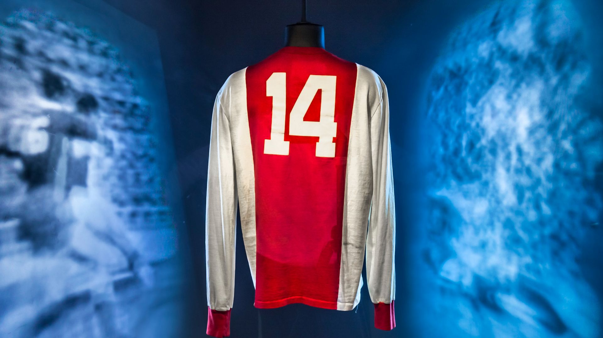
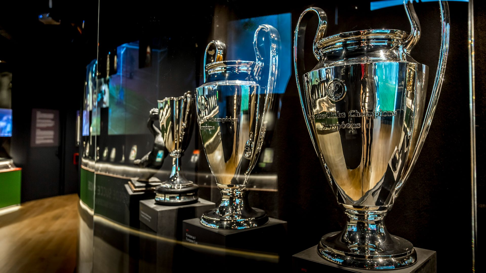
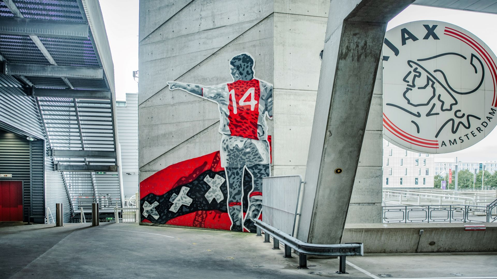
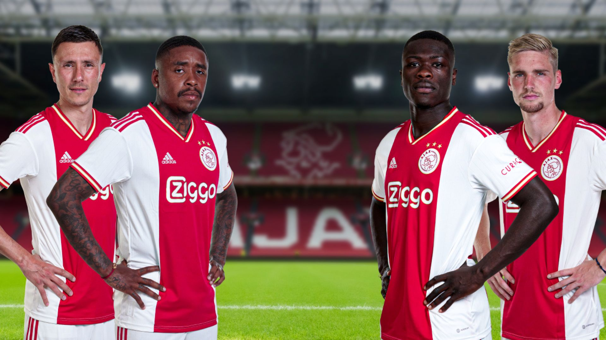
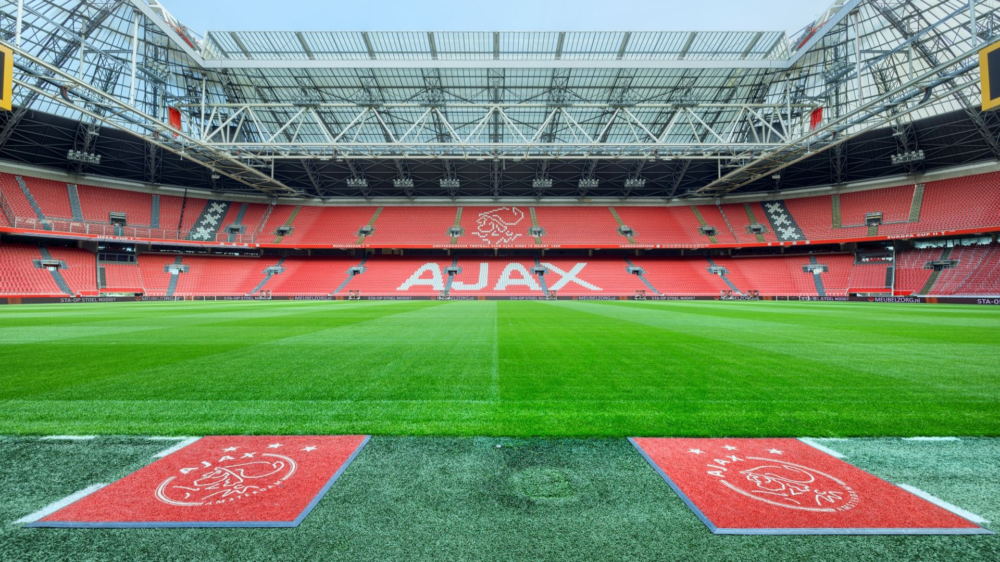
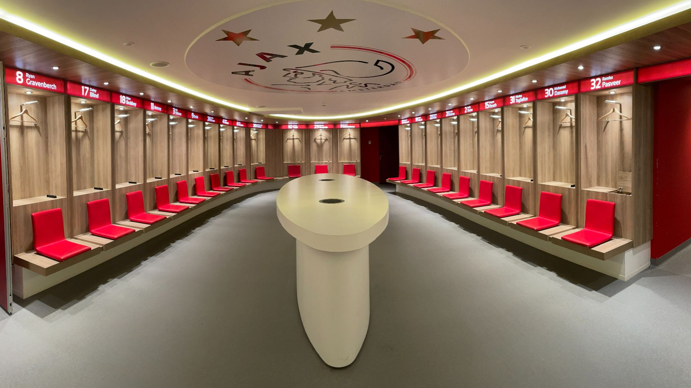
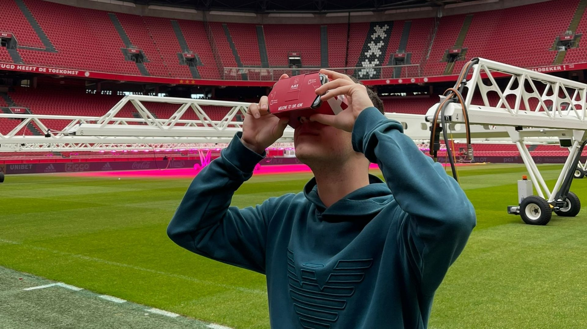
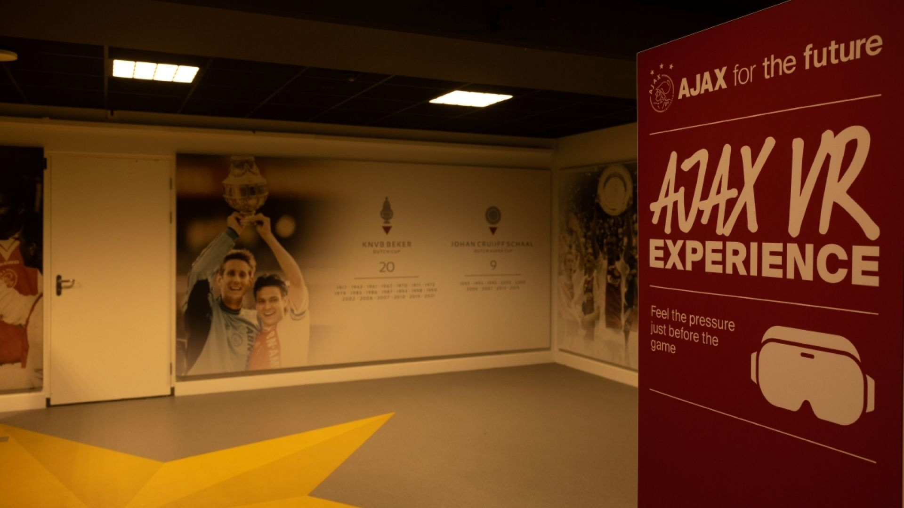
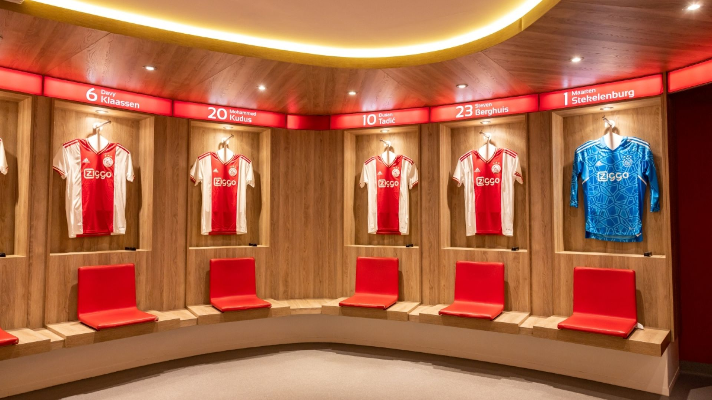

- 
- 
- 
- 
- 
- 
- 
- 
- 
selecteer een tijd
selecteer een datum
selecteer het aantal gasten
€ 20.00
vanaf
Boek nuKlassieke tour
Aangeboden door: Johan Cruijff ArenA
Tijdens de klassieke tour loop je zelf langs alle exclusieve plekken. Ontdek waar alleen de spelers komen op wedstrijddagen en ervaar het gevoel.
Wat is inbegrepen
- Kleedkamer Ajax
- Kleedkamer tegenstander
- Mixed Zone
- Spelerstunnel
- Veld
- Dug-outs
- Perskamer
- Ajax Gallery of Fame
- Gids
- Audiogids
Overzicht
Ervaar de opwinding van het Johan Cruijff ArenA Stadion tijdens deze klassieke tour. Op de route vertellen onze enthousiaste gidsen je alles over de exclusieve gebieden. Daarnaast heb je de mogelijkheid om achter de schermen te kijken, met speciale toegang tot gebieden die normaal alleen zijn gereserveerd voor spelers en officials. Neem een kijkje in de officiële kleedkamer van Ajax, wanneer deze niet in gebruik is op wedstrijddagen of tijdens trainingen.
Voor je gaat
Vanaf het centraal station neem je metro 50 of 54 naar Amsterdam Bijlmer ArenA, vanaf daar is het 5 minuten lopen naar Hoofd ingang E.
Let op: tijdens uitwedstrijden is de Ajax kleedkamer niet altijd beschikbaar vanwege het gebruik door de Ajax selectie. Tijdens thuiswedstrijddagen van Ajax zijn er geen tours beschikbaar. Controleer de webshop voor beschikbare tickets.
Download direct na aanschaf van je tickets de aangegeven Close App voor je tickets.
Als er iemand in je groep zit die gebruik maakt van een rolstoel, willen we je vragen om eerst contact met ons op te nemen. Dat kan je doen via Tour@johancruijffarena.nl.
De route kan afwijken op basis van beschikbaarheid.
Locatie adres
johan cruijff ArenA
Johan Cruijff ArenA, Johan Cruijff Boulevard, Amsterdam, Nederland